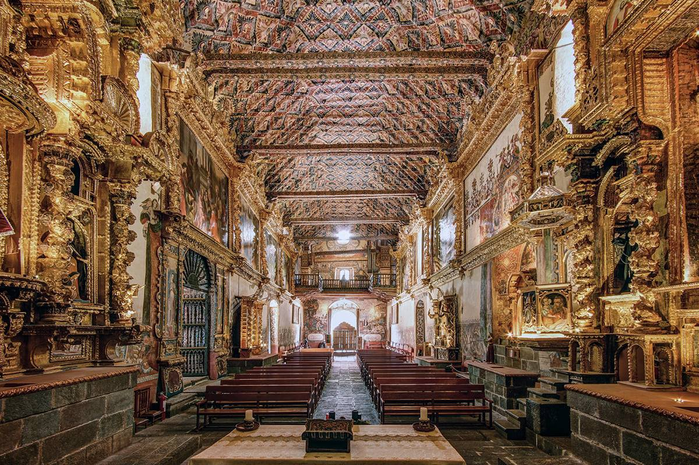
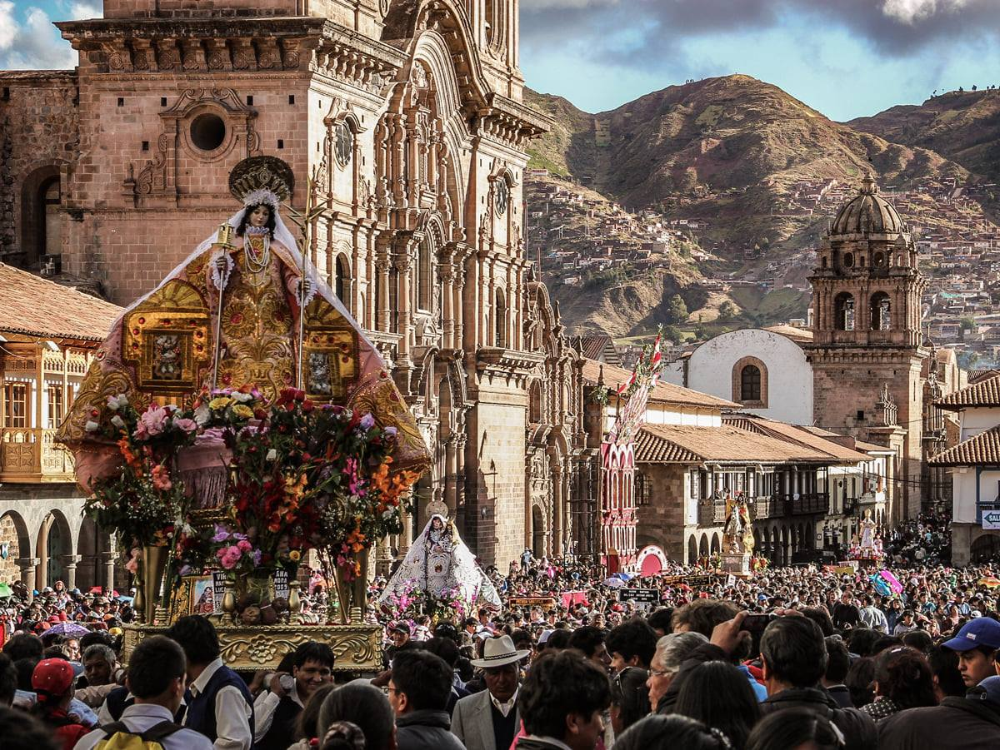

cusco Ciudad
Cuzco fue la capital y sede de Gobierno del Reino de los
Incas y lo siguió siendo al iniciarse la época imperial,
convirtiéndose en la ciudad más importante de los Andes
y de América del Sur. Este centralismo le dio auge y se
convirtió en el principal foco cultural y eje del culto religioso.
ver galeria
festividad inti raymi
El Inti Raymi o Fiesta del Sol es una celebración
que revalora la tradición incaica en las regiones
de los Andes, especialmente en la ciudad del Cusco.
Esta festividad se basa en la antigua ceremonia inc
a conocida como el Wawa Inti Raymi. Este antiguo ritual
fue instaurado por Pachacutec en la década de 1430 aproximadamente.
ver galeria

fiestas mes jubilar
La Municipalidad Provincial del Cusco y la Empresa
Municipal de Festejos del Cusco (Emufec) S.A.),
organizadores de esta efeméride, han elaborado un
programa con 25 actividades que se transmitirán a
través de plataformas virtuales oficiales
(Facebook, Instagram y Youtube de Emufec S.A.),
de la Municipalidad Provincial del Cusco.
ver galeria